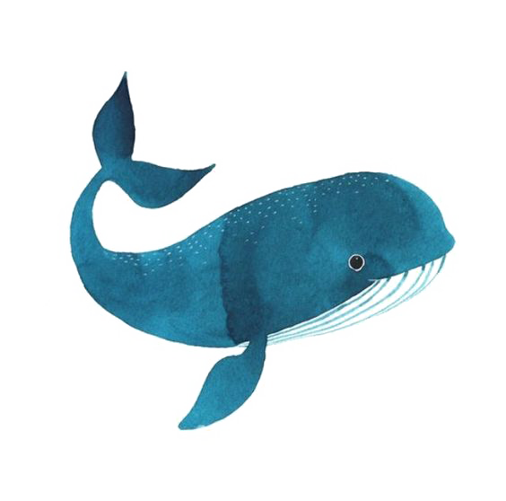

Con el nombre de yubarta, gubarto o ballena jorobada, la especie animal Megaptera novaeangliae, constituye una de las especies de rorcuales más llamativas y especiales. Con unas curiosas costumbres y formas de comunicarse, las ballenas jorobadas son famosas por su especial canto, fundamental en el intercambio de información entre ellas. Además, son animales migratorios que recorren grandes distancias cada año. ¿Quieres saber un poco más sobre ellas? Este es tu artículo, pues en ExpertoAnimal, hablaremos de todos los detalles sobre la ballena jorobada.
La ballena jorobada es un cetáceo de gran tamaño, siendo uno de los torcuales más grandes. En concreto, destaca el dimorfismo sexual de la especie, pues las hembras son sensiblemente más grandes que los machos. La diferencia es notoria, pues mientras que una hembra suele medir entre 11,9 y 13,9 metros, con máximos de hasta 15,5, los machos suelen encontrarse en el rango comprendido entre los 11 y los 13 metros, aunque se han registrado ejemplares de hasta 14 metros
Las yubartas son animales gregarios, que viven en comunidades. Estos grupos de ballenas son pequeños, solo siendo fiable y estable el vínculo presente entre las madres ballenas y los ballenatos. Uno de los motivos por lo que los grupos van cambiando en su composición es la fuerte rivalidad que se da entre los machos de yubarta. Esta competencia es especialmente feroz durante la época de apareamiento, la cual tiene lugar en verano. En ese momento, los machos tienen que imponerse, ya que las ballenas jorobadas son polígamas, es decir, no tienen una pareja estable. Estos cetáceos se comunican entre sí por medio de vocalizaciones. Estas, al igual que el tamaño, difieren en función del sexo. En los machos, el canto es largo, complicado y muy sonoro, mientras que en las hembras son más débiles y cortos. Estos cantos tienen una duración media de entre 10 y 20 minutos, pudiendo repetirse constantemente a lo largo de la jornada. Este canto sirve para distinguir a los individuos de una población, pues se ha observado que las jorobadas de un área presentan todas el mismo canto, que va cambiando con el paso de los años. Pese a ser un canto muy estudiado, se desconoce el objetivo exacto del mismo. Algunas hipótesis apuntan que podría servir como herramienta de los machos para atraer hembras, y otras que se trata de un mecanismo de ecolocalización. En cuanto a su nutrición, las ballenas presentan una limitación en el consumo de alimento, ya que al ser misticetos, carecen de dentadura. Esto las lleva a consumir alimentos de tamaño muy pequeño, pues no pueden triturar ni masticar los que son más grandes. Por ello, las ballenas jorobadas basan su dieta en krill, unos crustáceos diminutos, y placton, además de peces de pequeño tamaño como los arenques o las caballas